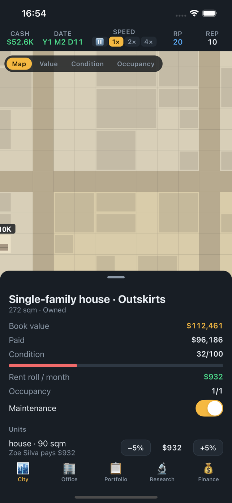
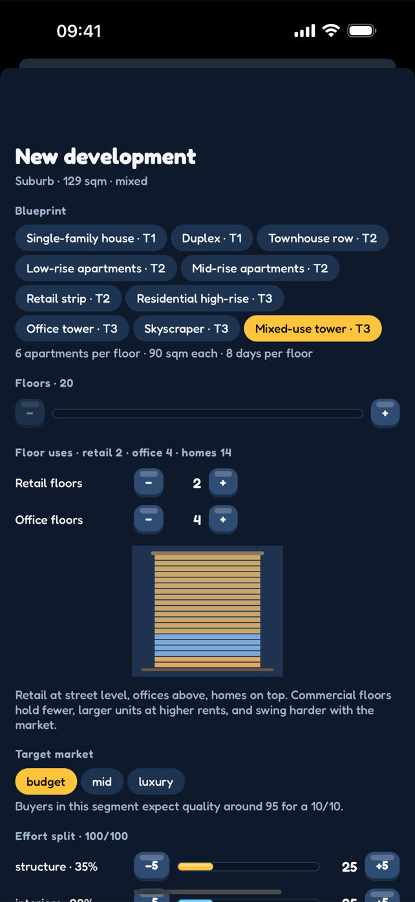
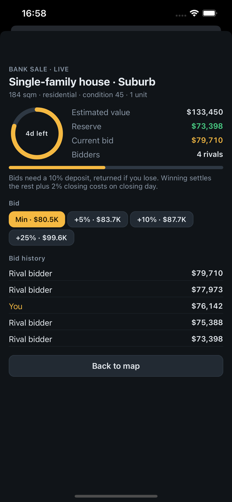
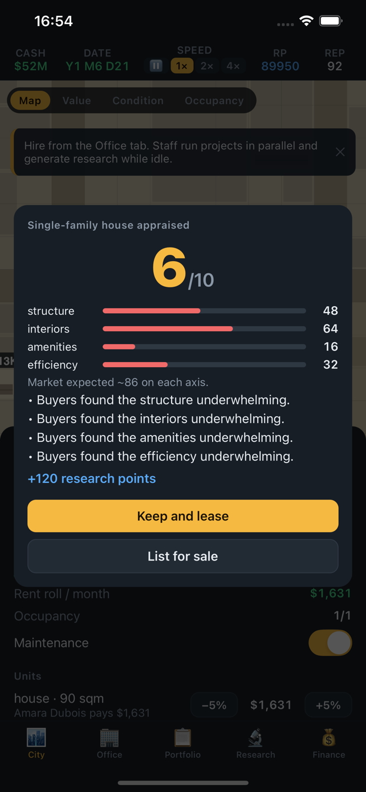

You start with $150,000 and a desk at home. Somewhere on the edge of town there is a tired little house nobody wants. Buy it, fix it up, and decide: rent it out, or sell it and do it again.
Property Tycoon is a business simulation in the spirit of the classic dev-studio tycoons, set in real estate. Grow from one house to a development firm, then to a corporate headquarters with your name on the skyline. Every building is a project: you pick the blueprint, split the effort, choose the crew, and the market grades what you made.
The story
Harbor City. In 1979 Dot Marchetti built the tired little houses on the edge of town. In the '92 bust the bank took her company. Now she is 71, retired, and not finished. She points you at the worst house on a decent street, one she built, and declares your kitchen table head office. Escrow the cat is the board.
Across town, Sterling Castellane owns half the skyline and tells the Harbor Ledger there is no room left for small builders. He buys the houses you pass on, takes a seat at your auctions, and has plans for the corner across the road from Dot's old office.
- Choices, not just numbers. Tenants, a loan officer, a city planner, a newspaper columnist and one very loud pop star bring you decisions with real costs. Your first tenant's parrot remembers what you chose.
- Critics. Finished buildings get reviews that tell you what buyers loved and what they didn't.
- Chapter One is free. The Kitchen Table takes you from one tired house to the edge of a real agency on Dot's old corner. The Kitchen Table League after it is free too: the Harbor Cup against Sterling's branch, the city's yearly top ten, and a finale of its own. Chapters Two to Four, up to the Skyline Commission, come with the full game.
- Prefer pure numbers? Pick Sandbox when you start a company: the same city and economy, with no story cards or characters.
What you do
- Flip and rent. Buy starter homes on a living city map, renovate them, set the rent, and watch tenants move in. Or list them for sale and move on.
- Hire a team. Architects, engineers, site managers, brokers, property managers and analysts. They gain experience, train up, and lose morale when you work them too hard without a break.
- Research and build. Unlock blueprints from houses to mid-rises (anything past the duplex needs the full game). Split effort across structure, interiors, amenities and efficiency, and get an appraisal grade that tells you what buyers wanted.
- Win auctions. Bid against hidden rivals for bank sales, often below market value, with a deposit on the line.
- Raise a skyline (full game). High-rises, office towers, skyscrapers and mixed-use towers with shops, offices and homes stacked floor by floor. Bring in investors, take on management contracts, and ride out booms, busts and rate shocks.
Free to start. The home-office years are free to play: buy, renovate, flip, rent, bid at auctions, hire your first employee, research, and build houses and duplexes. One in-app purchase unlocks the storefront agency, the development firm, the corporate HQ and everything they open, forever.
No ads, no accounts, and the game plays offline. Your game stays on your phone.
Screenshots




The towers and mixed-use buildings shown here need the full game.